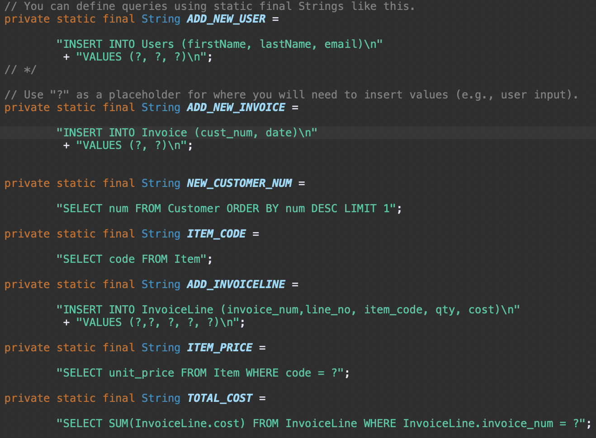
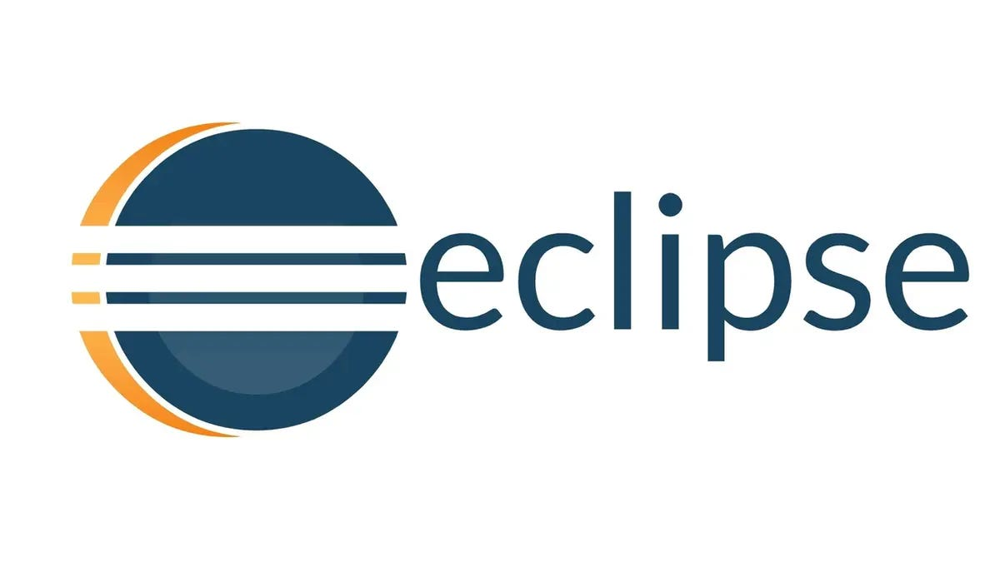

Project Case Study
Console Sneaker App
A Java-based console app that simulates sneaker marketplace workflows with persistent MySQL data,
secure connectivity, and practical backend logic.
Screenshots


Overview
Console Sneaker App modeled core sneaker marketplace behavior in a CLI environment,
including product lookup, persistence, and user actions backed by a real relational database.
What I Learned
I learned how to design cleaner software structure around a live data model, coordinate application
logic with database behavior, and solve implementation issues through iterative debugging with a partner.
What I Accomplished
I helped build a working marketplace-style console application with persistent MySQL data,
secure connectivity, and practical backend workflows that mirrored real system behavior.
Comp Sci Learning Goals
- Understood software design by organizing backend logic, data access, and program flow into a maintainable application.
- Gained significant project experience in a group setting through paired development, shared debugging, and joint delivery.
- Developed effective problem solving skills by troubleshooting database access, connection issues, and application behavior.
University Wide Leaning Goals
- Critical Thinking: evaluated how program design and database structure affected functionality and reliability.
- Creativity: translated a marketplace concept into a practical command-line product workflow.
- Collaboration: worked closely with a partner to divide tasks, debug faster, and align implementation decisions.
- Communication: explained design choices and implementation progress clearly while coordinating shared work.
- Global Responsibility: built with attention to dependable system behavior and user-facing data integrity.
Execution Timeline
Week one focused on infrastructure setup and secure DB access. Weeks two and three focused on
query logic, behavior validation, and final refinement.